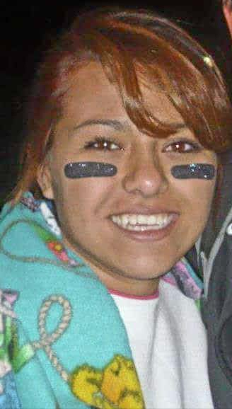
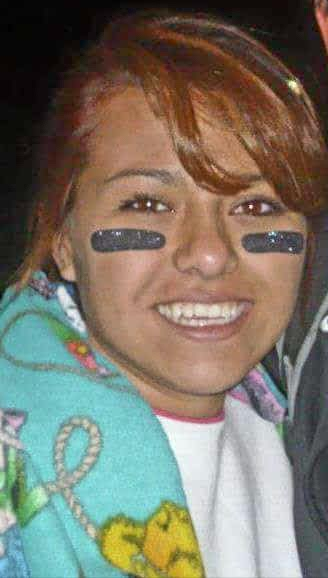

U
GOT
THIS
TOURNAMENT
Benefiting:
DominqueHernandez
Scholarship Fund And
Community First Foundation
Register!
Only $250 Per Team
$100 Deposit Will hold Your Spot
In Honor of Dominque
 

Charities
2016
LASHAWN HERNANDEZ-PRINCE
This is a story about a strong woman who was diagnosed with Acute Myelogenous Leukemia (AML) in 2012. Claudette Montour is the second eldest daughter in her family. She is the mother of four children (3 boys and 1 girl with several grandchildren). She is also the Great Aunt to Dominique Marie Hernandez.
Being diagnosed with AML was not immediately recognized by its symptoms. Claudette became ill and began to feel unwell for months. She believed a virus had overcome her and passed it off as such. Eventually, the effects of this illness were unbearable. Over a period of time of doctor visits, the predetermination of diagnosis was viral infection by the physicians as well.
It was not till one day an uncontrollable nose bleed suggested otherwise. Her husband, Pete Montour, come to the conclusion something else was going on with her health. Immediately she was taken in and the family requested for additional tests to be conducted. With extensive blood work, the results came back abnormal and she was diagnosed with AML. It was a very critical time at this point due the severity of her condition and progress of the leukemia. Had more time passed she may not be here with us today.
Treatment was implemented and a course of action was put in place to control the cancer. This involved a large amount of time in the hospital, with daily treatments of chemo therapy. Visiting her was very limited to close family members and friends. This precaution was taken to avoid any infection during her extreme chemo stages. Just to walk into her room, you were required to wash your hands, put on a gown and mask, if necessary. She had a huge support system from her husband, children, family and friends. It was uncommon she was left alone.
Just a small tidbit about Claudette before she was diagnosed, for those who did not know her, she was a person who, on a daily basis, kept up her appearance before even walking out of her bedroom for the day. Her hair was styled and sprayed for days. Make-up was on point, nails neatly polished and dressed to impress. She is a very strong willed person and willing to protect her family, no questions asked. We like to think she got the strength value from her mother. But as we all know chemo takes a toll on the body and all its organs, follicles, bones and mentality. But not her, she still comes out looking like she is on top of the world.
When it came to the point that she had gained enough strength and the cancer was under control, her best chance of beating this was to have a bone marrow transplant. The obstacle was finding a match with her blood. So the first best scenario was to test her siblings. Without any question, all four of her siblings (Bernadette, Paulette, Lynette, and James Jr) underwent testing. It was within Gods good grace that the third oldest sibling Paulette Montano was a perfect match. Both went into surgery for the transplant and in the end it was a success. Claudette’s body had accepted the transplant and eventually she was stable enough to leave the hospital and spend her days at home with her family. However, she still had a very weak immune system and could do very little at this point.
Over time, as she regained her physical strength, her health began to look bright. As she continued with her follow-up appointments with her doctor, therapy and controlling her environment, the outcome was a success and was in remission of cancer. Unfortunately, things change at any moment. We recently were informed her cancer has made its way back. Not a severe as before but enough to put her on therapy once again.
Everyday we pray for her health and pray for a cure. Claudette is still in great spirits and still lives life to the fullest. She never gives up and embraces life with her children, grandchildren and family.

2015

LASHAWN HERNANDEZ-PRINCE
This is about a boy who beat all odds, and gave people hope about life!
Lashawn Hernandez-Prince is Dominique’s first cousin; he was the next born grandchild into the family. At first it was hard for Dominique to except the new addition to the family, because now she had to share her attention with the first baby boy! It may have taking a little bit of time but she grew to love her cousin Lashawn very fast, they had an amazing bond, even till this day we feel their bond is even closer, knowing she still is around watching over Lashawn as a guardian Angel.
Lashawn was born March 5, 2004 to myself Jessica Hernandez and Rodney Prince as parents we were very scared and happy at the same time. When Lashawn was born it was a very traumatic birth. I got to see him for just a quick second, as the nurse and doctors notice he was having trouble breathing and not a cry came him from his little mouth. Before I could get any answers of what was wrong the Doctors already had him scheduled and air lifted to PSL. The only generic answer I could get out of the staff was he was having hard time breathing and it had to do something with his lungs.
With the expertise of PSL and extensive evaluation, it was told to us that our son has a rare case of Polycystic Kidney Disease (PKD) and to complicate things more Liver Disease, and it was in their opinion he would have a life expectant of only 2 days. The shock and heartbreaking news was unbearable, but we as a family were determined not to give up, and with the grace of God’s hand and the prayers of a lot of family and friends, Lashawn was able to show little improvements each day and prove medical history wrong. At this time he surpassed the 2 day living span given and was transported to Children’s hospital to be taken care of. After several months ICN in the hospital. We were in flicked with intense days and sleepless nights of whether or not he will make it through the night. But eventually came appoint where he was able to breathe and function on his own. Amazingly enough we were finally able to take him home with a large list of things we had to do and given vital medications he must take without missing a dosage and on top of that we also administered shots. He was not completely out of the woods because he still was attached to NG tubing were for most his new born life he was feed through. His father and I accepted the challenge and gave our son a chance for life.
Today, many years have passed by and Lashawn is now 11, but it has not been an easy road, fore his still have his up and downs and ins and outs. We been through more obstacles from being diagnosed with Varices veins, which are veins in the stomach that bleed out, we found this out by Lashawn starting to vomit and releasing nothing but blood, he was bleeding internally inside and was suggested close to dying. This episode was cause by disease of the liver not functioning correctly, so blood flow stops and it backs it up to the veins in the stomach and burst. There were times he wake up out of a dead sleep and seemed to be alert and fall right over and just stop breathing and his face and body would turn blue from lack of oxygen. Not knowing the reason for this episode his father of course would be on the phone with 911 and I would start CPR on him. But within minutes he would regain conscious and feel super tired, but had no clue or reconciliation on what happened and walked off normal. Many test, probing, scans occurred for answers. Doctors have been stomped for some time now on why this occurs. These are just a few things we go through with his condition.
As Lashawn is getting older he is starting to understand his reality, but it still hard for him to know he will never be able to play any sports as his cousins or Dominique did. He loved to watch Dominique play softball and wishes very much to play one day himself. But he will never get the chance to participate in anything that has to do with contact around his abdominal area, so he is very limited to a lot of things when it comes to playing with other kids, activities and sports.
In the near future he will need to be on dialysis, for currently his kidney’s only function at 25%. Soon he will need to be put on a waiting list in hopes for a Kidney and liver transplant. So we still have a large hill to climb, but we see hope at the top, and Dominique guiding us alone the way, so that her little cousin has a long and full filled life.
We want to take the time to thank my brother Manuel Hernandez, Uncle/Nino to Lashawn for choosing PKD research at Children’s Hospital to be the charity of choice this year. By donating to this organization you are not only give your nephew/godson a chance for happiness and life but you are giving other children in his same situation hope and dreams to live.
Sincerely Blessed,
Jessica Hernandez, Rodney Prince, Dalonte Prince, and our miracle Lashawn Hernandez-Prince